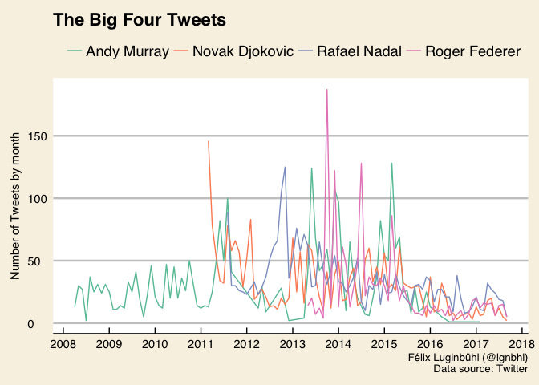
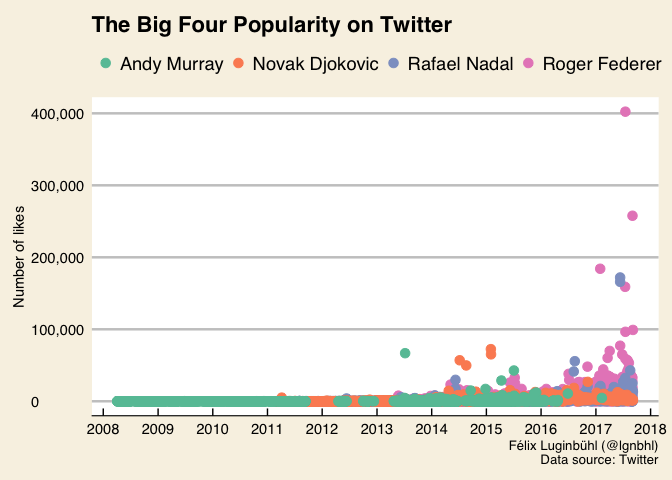
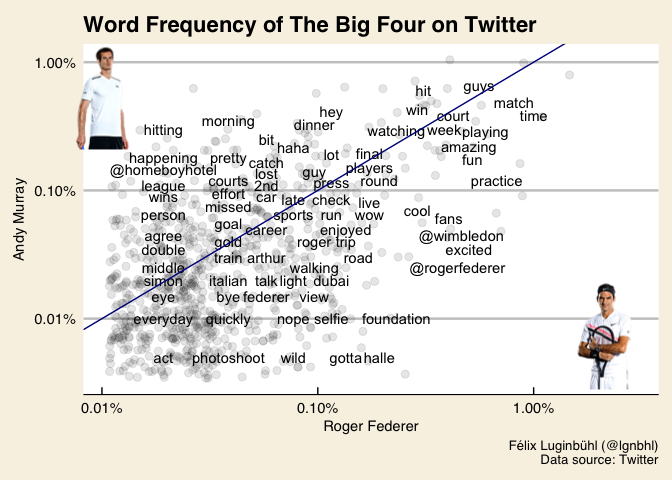
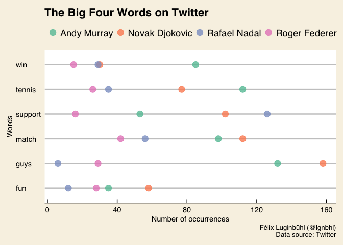

In the world of men’s tennis, only four players, known as the “Big Four”, have dominated the main tournaments since 2004. You probably know their names: Roger Federer, Rafael Nadal, Novak Djokovic and Andy Murray. As they regularly make the headlines all over the world, I wanted to know more about their popularity on Twitter with the R packages {rtweet} and {tidytext}.
In this article, we will answer three questions about the Big Four:
Let’s begin with a general overview of the Big Four’s Twitter accounts.
library(tidyverse)
library(rtweet)
big4_usernames <- c("rogerfederer", "RafaelNadal", "DjokerNole", "andy_murray")
big4_accounts <- lookup_users(big4_usernames)
write.csv(big4_accounts, "big4_accounts.csv")
head(big4_accounts[, c(2:4, 7:8)])## name screen_name location followers_count friends_count
## 1 Roger Federer rogerfederer Switzerland 9129816 80
## 2 Rafa Nadal RafaelNadal Manacor 14052334 87
## 3 Novak Djokovic DjokerNole <NA> 7864231 734
## 4 Andy Murray andy_murray London 3698757 141As you see, “Rafa” Nadal has 14 millions of followers; while Andy Murray has “only” 3.6 millions. Can we conclude that the former is more popular than the latter on Twitter? Well, diving deeper into the social network analysis will give us a more nuanced answer.
First, let’s download all the tweets published by the Big Four and related metadata on Twitter. This can be done very easily with the get_timeline function of the {rtweet} package.
# Get Big Four tweets
tweets_federer <- get_timeline("rogerfederer", n = 3000)
tweets_nadal <- get_timeline("RafaelNadal", n = 3000)
tweets_djokovic <- get_timeline("DjokerNole", n = 3000)
tweets_murray <- get_timeline("andy_murray", n = 3000)
# Join in one dataset
tweets_big4 <- rbind(tweets_federer, tweets_nadal, tweets_djokovic, tweets_murray)Our dataframe is ready. How many tweets did we get?
## [1] 9126 35In order to know how often the Big Four tweets, we need to count the number of Tweets published online every month by each tennis player.
library(lubridate)
tweets_big4_time <- tweets_big4 %>%
select(screen_name, created_at, favorite_count) %>%
mutate(created_at = ymd_hms(created_at)) %>%
mutate(month = round_date(created_at, "month")) %>%
as_tibble()
tweets_big4_tidy <- tweets_big4_time %>%
group_by(screen_name, month) %>%
summarise(count = n())Okay, we are ready to run some visualisations.
library(scales)
library(ggthemes)
tweets_big4_tidy %>%
ggplot(aes(x = month, y = count , colour = screen_name)) +
geom_line() +
scale_x_datetime(NULL, date_breaks("1 year"), date_labels = "%Y") +
scale_color_brewer(name = NULL,
labels = c("Andy Murray", "Novak Djokovic", "Rafael Nadal", "Roger Federer"),
palette = "Set2") +
theme_economist_white() +
theme(plot.background = element_rect(fill = "#f8f2e4"),
legend.background = element_blank(),
legend.key = element_blank()) +
labs(x = "By month", y = "Number of Tweets by month",
title = "The Big Four Tweets",
caption = "Félix Luginbühl (@lgnbhl)\nData source: Twitter")
We can make our time serie visualization interactive with the {dygraphs} package.
library(xts)
library(dygraphs)
tweets_big4_xts <- tweets_big4_tidy %>%
spread(screen_name, count) %>%
select("Murray" = 2, "Djokovic" = 3, "Nadal" = 4, "Federer" = 5, "Month" = 1)
tweets_big4_xts <- xts(tweets_big4_xts, order.by=(tweets_big4_xts$Month))
dygraph(tweets_big4_xts, main = "The Big Four Tweets", ylab = "Number of Tweets by month") %>%
dyAxis("x", drawGrid = FALSE) %>%
dyOptions(colors = RColorBrewer::brewer.pal(5, "Set2")) %>%
dyRangeSelector()
The number of tweets published every month is quite irregular. The tennis players are probably tweeting more during tournaments, specially when they reach high level matches. We can also see that they tweet less since the middle of 2015 and that Andy Murray totally stopped tweeting in 2016 (!).
At this point, maybe you are wondering - as I do - if the Big Four popularity on Twitter is increasing or decreasing over time. Let’s answer this question now.
The Twitter Developer Documentation explains that the favorite_count variable “indicates approximately how many times this Tweet has been liked by Twitter users”. It’s a good measure to discover which are the most popular tweets of the Big Four.
tweets_big4_time %>%
ggplot(aes(x = created_at, y = favorite_count, colour = screen_name)) +
geom_point(size = 3) +
scale_x_datetime(NULL, date_breaks("1 year"), date_labels = "%Y") +
scale_y_continuous(labels = comma) +
scale_color_brewer(name = NULL,
labels = c("Andy Murray", "Novak Djokovic", "Rafael Nadal", "Roger Federer"),
palette = "Set2") +
ggthemes::theme_economist_white() +
theme(plot.background = element_rect(fill = "#f8f2e4"),
legend.background = element_blank(),
legend.key = element_blank()) +
labs(x = NULL, y = "Number of likes",
title = "The Big Four Popularity on Twitter",
caption = "Félix Luginbühl (@lgnbhl)\n Data source: Twitter")
Since 2016, the most liked tweets are those - sorry to say - of Roger Federer and Rafael Nadal. The most liked tweets of Novak Djokovic were in the middle of 2014 and the beginning of 2015.
If this visualization could have been balanced with the worldwide increase of Twitter accounts number over the years - which biais the comparaison of the tweets popularity during the years -, comparing the tweets of the players in a given month is still relevant.
It is now time to have a look on the content of their tweets.
Let’s look at the content of the 10 most ever liked tweets of the Big Four.
library(knitr)
tweets_big4 %>%
select(screen_name, text, favorite_count, created_at) %>%
arrange(desc(favorite_count)) %>%
head(n = 10L) %>%
kable()| screen_name | text | favorite_count | created_at |
|---|---|---|---|
| rogerfederer | #19 tastes great https://t.co/3Hv3lM5Rk9 | 403819 | 2017-07-16 15:47:03 |
| rogerfederer | 🎾👉🏼 💎👉🏼 🆘 https://t.co/6fYgmDFj8z | 265651 | 2017-09-02 02:11:07 |
| rogerfederer | Juan Martin del THORtro @delpotrojuan https://t.co/BsLeAHhULV | 193749 | 2017-09-05 02:57:27 |
| rogerfederer | 1️⃣8️⃣🏆 https://t.co/Ap8aZGhBNf | 1838 | 96 2017-01-29 16:05:13 |
| RafaelNadal | #CHAMP10N https://t.co/BV0M1qE7NE | 171973 | 2017-06-11 16:13:25 |
| RafaelNadal | #CHAMP10N | 165806 | 2017-06-11 15:31:47 |
| rogerfederer | So so happy and privileged to be in another @Wimbledon final. See you all Sunday 😀 | 158864 | 2017-07-14 22:02:28 |
| rogerfederer | On my way to the @Wimbledon champions dinner 🐧 https://t.co/J1CLMosSkH | 96439 | 2017-07-16 21:01:41 |
| rogerfederer | Simply incredible, Rafa #10 #RG17 #VamosRafa #justdoit | 77144 | 2017-06-11 21:50:04 |
| DjokerNole | . @NiallOfficial haha thanks bro. If you can watch tomorrow give me and your #nolefam fans a shout to cheer me on | 72327 | 2015-01-30 22:19:42 |
Humour pays off on social media. Have a look at the funny second third more liked tweets of Roger Federer:
🎾👉🏼 💎👉🏼 🆘 pic.twitter.com/6fYgmDFj8z
— Roger Federer (@rogerfederer) 2 septembre 2017
Juan Martin del THORtro @delpotrojuan pic.twitter.com/BsLeAHhULV
— Roger Federer (@rogerfederer) 5 septembre 2017
Once again, the fact that the ninth most liked tweets are published in 2017 can be explained by the increasing number of people using Twitter - and not only by the increasing popularity of the tennis players.
Is our top 10 different if we look at the most retweeted tweets?
tweets_big4 %>%
select(screen_name, text, retweet_count, created_at) %>%
arrange(desc(retweet_count)) %>%
head(n = 10L) %>%
kable()| screen_name | text | retweet_count | created_at |
|---|---|---|---|
| andy_murray | RT @AHMalcolm: For every retweet this gets, Pedigree will donate one bowl of dog food to dogs in need! 😊 #tweetforbowls http://t.co/z4rmc2H… | 795958 | 2015-05-24 20:12:51 |
| rogerfederer | #19 tastes great https://t.co/3Hv3lM5Rk9 | 146819 | 2017-07-16 15:47:03 |
| rogerfederer | 🎾👉🏼 💎👉🏼 🆘 https://t.co/6fYgmDFj8z | 137589 | 2017-09-02 02:11:07 |
| RafaelNadal | #CHAMP10N | 84193 | 2017-06-11 15:31:47 |
| andy_murray | Can’t believe what’s just happened!!!!!!! | 82529 | 2013-07-07 17:45:01 |
| rogerfederer | Juan Martin del THORtro @delpotrojuan https://t.co/BsLeAHhULV | 80927 | 2017-09-05 02:57:27 |
| RafaelNadal | #CHAMP10N https://t.co/BV0M1qE7NE | 80710 | 2017-06-11 16:13:25 |
| rogerfederer | 1️⃣8️⃣🏆 https://t.co/Ap8aZGhBNf | 783 | 55 2017-01-29 16:05:13 |
| DjokerNole | RT @NiallOfficial: Different league of tennis tonight ! Jesus Christ ! @DjokerNole and @stanwawrinka were incredible ! Congrats nole ! Fina… | 73005 | 2015-01-30 22:13:53 |
| DjokerNole | RT @NiallOfficial: Great to watch my brother @DjokerNole win at the O2 arena tonight ! What an athlete ! http://t.co/anrPmTxPEG | 61559 | 2014-11-18 18:06:19 |
The 10 most retweeted tweets are quite similar to the most liked ones. With the exception of the most retweeted tweet of all the Big Four history on Twitter: a 2015 retweet by Andy Murray about a dog food donation that has been retweeted almost 800’000 times.
But what about the content of the other tweets?
Following the ebook Text mining with R from Julia Silge and David Robinson, let’s compare the relative frequency of the words usage of two tennis players. As Rafael Nadal and Novak Djokovic sometimes write in their own mother tongue, let’s have a look at the word usage made by Roger Federer and Andy Murray online.
We firstly need to prepare the data.
library(tidytext)
replace_reg <- "https://t.co/[A-Za-z\\d]+|http://[A-Za-z\\d]+|&|<|>|RT|https"
unnest_reg <- "([^A-Za-z_\\d#@']|'(?![A-Za-z_\\d#@]))"
tweets_tidy <- tweets_big4 %>%
filter(!str_detect(text, "^RT")) %>%
mutate(text = str_replace_all(text, replace_reg, "")) %>%
unnest_tokens(word, text, token = "regex", pattern = unnest_reg) %>%
filter(!word %in% stop_words$word,
str_detect(word, "[a-z]"))
tweets_frequency1 <- tweets_tidy %>%
group_by(screen_name) %>%
count(word, sort = TRUE) %>%
left_join(tweets_tidy %>%
group_by(screen_name) %>%
summarise(total = n())) %>%
mutate(freq = n/total)
library(tidyr)
tweets_frequency2 <- tweets_frequency1 %>%
select(screen_name, word, freq) %>%
spread(screen_name, freq) %>%
arrange(rogerfederer, DjokerNole, RafaelNadal, andy_murray)For readability, we will transform the word frequency in “Log Ratio”. It means, as explained in an article of Andrew Hardie, that “every extra point of Log Ratio score represents a doubling in size of the difference between the two corpora”.
library(magick)
library(grid)
murray <- image_read("http://www.atpworldtour.com/-/media/tennis/players/gladiator/2017/murray_a_fullao17.png")
federer <- image_read("http://www.atpworldtour.com/-/media/tennis/players/gladiator/2018/federer_full_ao18.png")
tweets_frequency2 %>%
ggplot(aes(x = rogerfederer, y = andy_murray)) +
geom_jitter(alpha = 0.1, size = 2.5, width = 0.25, height = 0.25) +
geom_text(aes(label = word), check_overlap = TRUE, vjust = 1.5) +
scale_x_log10(labels = percent_format()) +
scale_y_log10(labels = percent_format()) +
geom_abline(color = "darkblue") +
theme_economist_white() +
theme(plot.background = element_rect(fill = "#f8f2e4")) +
labs(x = "Roger Federer", y = "Andy Murray",
title = "Word Frequency of The Big Four on Twitter",
caption = "Félix Luginbühl (@lgnbhl)\nData source: Twitter")
grid.raster(federer, x = 0.9, y = 0.3, width = 0.1)
grid.raster(murray, x = 0.16, y = 0.8, width = 0.1)
The closer the words are from the read line, the more they are used with equal frequencies by Roger Federer and Andy Murray. This visualisation let us know which words are often used by the two players, and which words are more “typical” from one or the other.
Finally, we can select some highly frequently words used by the Big Four on Twitter and see which one are more used by whom.
plotTwitterWords <- function(w) {
tweets_big4 %>%
filter(is_retweet == FALSE) %>%
unnest_tokens(words, text) %>%
select(words, screen_name) %>%
group_by(screen_name) %>%
count(words) %>%
filter(words %in% c(w)) %>%
ggplot(aes(words, n, color = screen_name)) +
geom_point(size = 4, alpha = 0.8) +
coord_flip() +
scale_color_brewer(name = NULL,
labels = c("Andy Murray", "Novak Djokovic", "Rafael Nadal", "Roger Federer"),
palette = "Set2") +
ggthemes::theme_economist_white() +
theme(plot.background = element_rect(fill = "#f8f2e4"),
legend.background = element_blank(),
legend.key = element_blank()) +
labs(x = "Words", y = "Number of occurrences",
title = "The Big Four Words on Twitter",
caption = "Félix Luginbühl (@lgnbhl)\n Data source: Twitter")
}
# Selecting of words to plot
w <- c("tennis", "support", "guys", "fun", "win", "match")
plotTwitterWords(w)
Andy Murray often uses the words “win” and “tennis”, while Novak Djokovic prefers the words “match”, “guys” and “fun”. The function plotTwitterWords gives the possibility to easily play with the words to plot.
Text and figures are licensed under Creative Commons Attribution CC BY 4.0. The figures that have been reused from other sources don't fall under this license and can be recognized by a note in their caption: "Figure from ...".